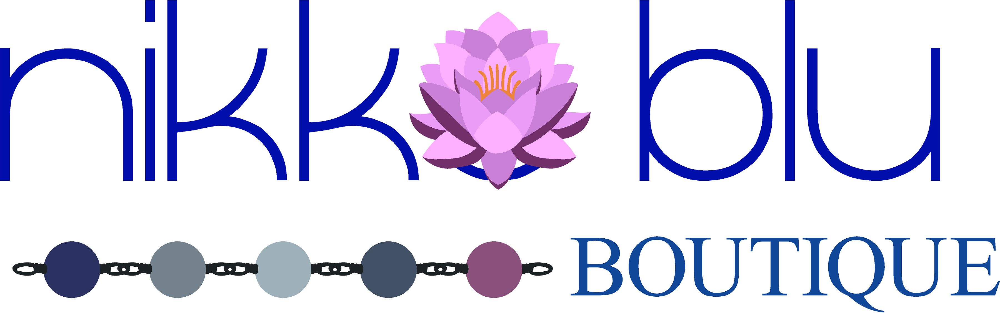

01
Growth audit proposal
A practical growth audit for the full NIKKO BLUE ecosystem.
Prepared for Lance + Kim. A focused five-week engagement covering NIKKO BLUE, Tipsy Gypsy, and the Whistle Stop experience — from discovery through checkout, service flow, content, paid media, and partnership opportunities.